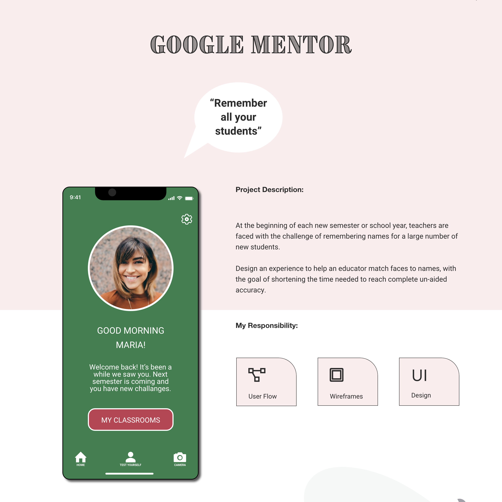

Fotografia


Články
Do tejto chvíle som vždy písal kód pre skušobné projekty v rámci učenia,
napríklad z Frontend Mentor,
ak by ste však chceli vidieť reálnu webovú
stránku, ktorú som urobil tak sa ste ju práve navštívili a prehliadate si ju.
Čo som sa naučil a aké tipy by som odporučil si môžete prečítať nižšie
v nasledujúcich článkoch.
UX/UI Design
Fotografia je mojou vášňou už dlhé roky a s webovým designom
som sa zoznámil minulý rok. Odvtedy sa však každý deň učím
a snažímsa zdokonaľovať. Momentálne sa venujem hlavne CSS.
- 